Материалы курса Алгоритмизации и Программирования
Лекция 4 - "Форматирование строк и консольные программы".
Преображенский М.В. 2021/22
На этой лекции мы поговорим о форматировании текстовых строк и основанных на этом консольных программах.
Форматирование
Форматирование - способ вывода текстов в нужном формате с помощью формат-строк.
Формат-строки
На прошлой лекции мы обсудили разные строчные операторы, узнали как искать в строках подстроки и собирать строки из отдельных строк.
Практика программирования показала, что хотя работать таким способом можно, это не всегда удобно. Посмотрите, например, на эту программу,
которая выводила бы текущее время с точностью до секунд:
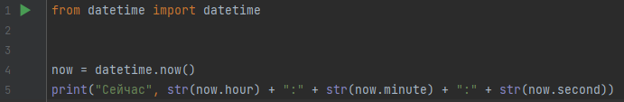
Как видите, нам приходится каждое вставляемое число явно приводить к типу str, и суммировать его с ":". Когда такое приходится делать постоянно, это становится страшно неудобно.
Следующая программа делает то же самое, но используя встроенную в str функцию format. Обратите внимание на то, как фигурные скобки соответствуют положению перечисляемых в параметрах функции значений:
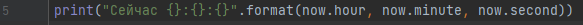
Функция format оказалась настолько удобной, что для неё даже сделали специальную отдельную форму записи, которая получила название f-строки
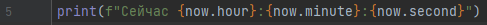
f-строка - особый вид строки, начинающийся с буквы f перед кавычками, в которую можно вставлять переменные в фигурных скобках.
Значения переменных внутри f-строки могут быть str, но могут им и не быть (и тогда выводится в строку будут их строчные представления)
Саму строку внутри кавычек называют формат-строкой. В случае с использованием f-строки строка задаётся жёстко. В случае с использованием .format можно предварительно настраивать саму формат-строку.
Упражнение:
Напишите и запустите следующую программу. Попробуйте объяснить, каким образом она собирает получающийся в результате текстовый вывод:
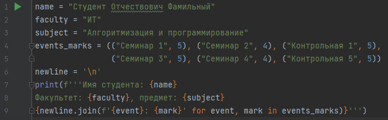
Форматирование внутри формат-строк:
Если Вы запустите такую программу:
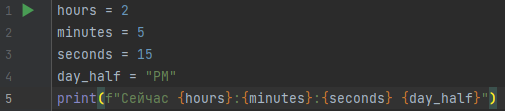
То Вы получите такой вывод:
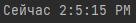
Как не сложно понять, в этом выводе проблема - в обычном временном формате если минут или секунд меньше 10, то спереди пишут 0. Если нарушать это правило, то читать время становится решительно неудобно.
Можно решать эту проблему так (и её часто так решали):
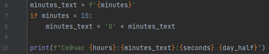
Но на практике подобные проблемы возникали настолько часто, что для них в рамках форматирования строк придумали особое решение: форматирование. Например, использование такой формат-строки:
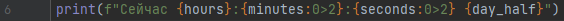
Даст такой результат:
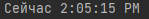
Форматирование - применение стандартных модификаций к строчному представлению переменных внутри формат-строки.
В современной версии Python это модификации прописываются внутри фигурных скобок формат-строки после двоеточия.
Документация по форматам в Питоне (как в старом стиле так и в интересном нам современном стиле) находится здесь: https://pyformat.info/
САМОСТОЯТЕЛЬНОЕ ЗАДАНИЕ: разберите все представленные по ссылке способы форматирования строк. Протестируйте их работу на небольших программах.
Консольные приложения
Консольные приложения запускаются из консоли и работают в ней. Например, сам python.exe - консольное приложение!
Часто первые версии программ являются консольными приложениями!
Пример консольного приложения
Одним из распространённых примеров консольных приложений являются текстовые приключения.
Современные консоли обычно дают больше возможностей, чем простое текстовое форматирование. Например, они позволяют отображать текст разных размеров и цвета, а так же работать мышкой. Ниже приведено два скриншота из игры с сайта textadventures.co.uk/. Как Вы думаете, какие элементы этой игры можно реализовать с использованием стандартных инструментов форматирования в Python?
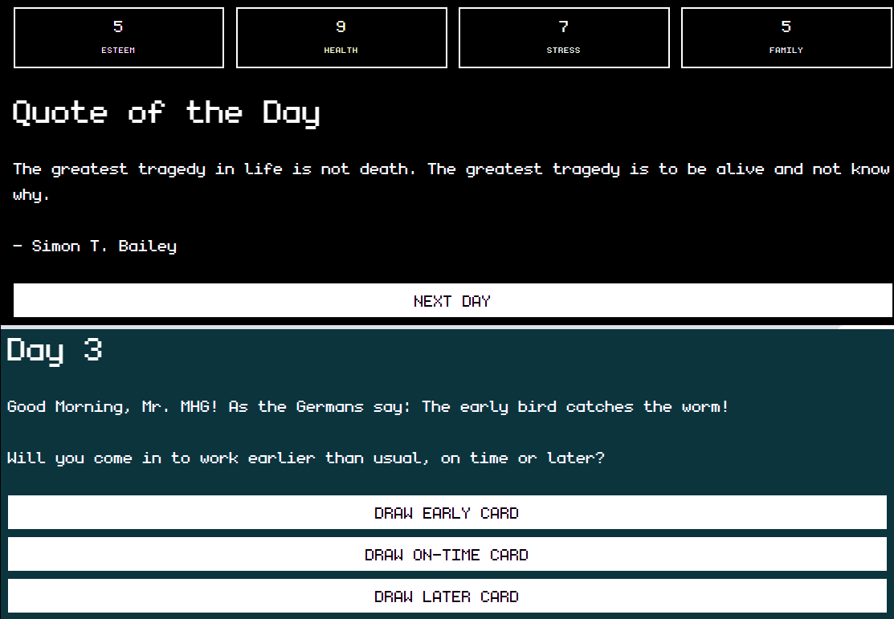
Ниже приведён код, который мог бы составить основу для похожей игры:
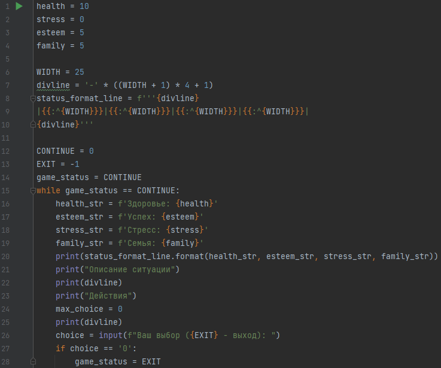
Разберитесь, как этот код работает! Попробуйте вывести на экран значение status_format_line и разберитесь, как оно получилось. Поймите, как вызов format от status_format_line даёт шапку таблицы, и как именно внутри используются другие строки.
Сделайте так, чтобы можно было дальше выполнять шаги в этой игре, меняя параметры, приходя к победе или поражению.